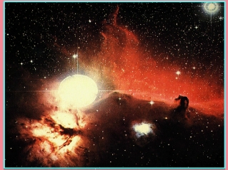

|
Jonathan Sarfati de Answers in Genesis (AiG) escreveu uma resposta breve à FAQ de Dave Moore sobre Supernovas, Restos de Supernovas e Criacionismo da Terra Jovem, que desmentiu um artigo de Sarfati sobre restos de supernovas e o artigo de Keith Davies no qual ele se baseia. Este artigo é a resposta do Sr. Moore ao Dr. Sarfati. O Sr. Moore relata que postou uma cópia de sua resposta ao TheologyWeb, onde foi removida. O Dr. Sarfati publica no TheologyWeb sob o nome de usuário "Sócrates", com o hábito de se referir a si mesmo em terceira pessoa. |
O Dr. Sarfati diz,
Isso parece vir de um artigo ensurdecedor e prolixo no site essencialmente ateu talk.origins, escrito por uma pessoa chamada Moore, que admite não ter qualificações em astronomia. Muito do conteúdo do TalkOrigins é escrito por pessoas não qualificadas nas áreas sobre as quais falam — e isso se mostra! Keith Davies, cuja pesquisa reconheci usar, e eu estamos bem cientes desse artigo de Moore, e entendo que ele está preparando uma resposta detalhada.
Nem Davies (que tem qualificações em astronomia), que parece ser um professor [1], nem Sarfati, cujas qualificações são em química (especificamente supercondutores) [2]. Mas isso não parece impedir que Sarfati faça discursos sobre qualquer assunto sob o sol no site AiG [3] [4], quando ele carece de qualificações básicas na maioria das áreas de assunto. É isso o cheiro de hipocrisia no ar?
Moore também está obcecado com o fetichismo anti-criacionista que os criacionistas citam fora de contexto.
Desculpe, Sarfati. Este é um fato genuíno. Enfrentando a extrema carência de evidências (ou seja, nenhuma) que sustente sua posição, os criacionistas recorrem frequentemente à citação seletiva — de fato, no passado, publicaram livros inteiros de citações adulteradas "suportando" o criacionismo [5]
Ele critica veementemente a maneira como Davies utiliza algumas das frases incomuns encontradas em revistas que indicaram surpresa diante da escassez de SNRs galácticos, e sem dúvida é isso que seu crítico captou.
Exceto que as frases, quando citadas no contexto dos seus parágrafos e discussões nos artigos originais indicam completamente conclusões diferentes do que Davies alega no seu artigo.
Moore faz o ponto de que várias dessas frases foram escritas no contexto de explicações do problema e que o Sr. Davies deveria ter deixado isso claro. Moore omite completamente um fato crucial. Ele falha em dizer que Davies introduziu claramente e sem ambiguidade aquelas frases ao dizer:
'Um número de astrônomos, no contexto de tentar encontrar soluções para a carência, comentaram sobre a situação da seguinte maneira.'
As declarações acima, completamente sem ambiguidade, que Davies usa para introduzir aquelas frases, deveriam, no mínimo, ter sido incluídas na seção que Moore extraiu de seu artigo. Não ter apenas deixado de fora aquela importante declaração introdutória, mas também não ter sequer referido-se a ela, está a beira de ser difamatório.
Nada disso, Sarfati. Davies alega que existe uma deficiência no número de SNR, e está adulterando citações de um antigo artigo para fazer parecer que os astrônomos também o fazem, quando até uma varredura superficial pela literatura astronômica (algo que você parece nem ter tentado) mostra que não há uma deficiência — o número atual de restos de supernova confirmados na nossa galáxia (aproximadamente 250 e aumentando, de acordo com o último catálogo de SNRs de Green) está se aproximando do total teórico na nossa galáxia [7], e que a diferença entre os dois números é facilmente explicável [8].
Meu artigo foi necessariamente condensado a partir de Davies, mas forneceu todas as referências a ele e às suas fontes, para que as pessoas pudessem consultá-las.
Mas parece que Sarfati não fez nenhum tipo de verificação sobre seu artigo. Ele está repleto de erros grosseiros e conclusões incorretas e imprecisas. Mesmo um conhecimento superficial de astronomia teria detectado esses erros.
|
 |
{kind=link}
Mas o que é pior para Davies, o que ele chama de uma "foto de Super Nova", no topo de seu artigo, não é nada mais do que uma imagem superexposta de uma estrela normal, uma das estrelas no cinto de Órion, Zeta Orionis (Alnitak). A nebulosidade que a rodeia é a NGC 2024, uma nebulosa de emissão, e você também pode ver a Névoa do Cavaleiro no lado direito. Então, antes mesmo de Davies escrever uma única palavra em seu artigo, ele cometeu um erro elementar tão básico que até um conhecimento rudimentar de astronomia teria detectado. O fato de que Sarfati também não tenha detectado isso não reflete bem sobre ele também.
Observo, no entanto, que na resposta de Sarfati não há qualquer tentativa de refutação baseada nas evidências astrofísicas que apresentei sobre por que Davies está errado; em vez disso, ele apenas obscurece e faz declarações vazias sem abordar os fatos. De fato, desde que originalmente escrevi o FAQ sobre supernovas, a literatura astronômica está repleta de ainda mais exemplos observados de restos antigos (> 50000 anos), restos que, segundo Davies, não existem!
[1] Como as qualificações
prominentemente citadas no topo de
o artigo de Davies
mostra.
[2]
http://home.austarnet.com.au/stear/j'arkuse.htm
[3] Uma rápida varredura do
AiG's website
indica dezenas de artigos de Sarfati sobre muitos assuntos
na ciência, todos exibindo a mesma ignorância básica
e metodologia incorreta que ele demonstrou em seu artigo
original sobre supernovas.
[4] Indicativamente, Sarfati está errado
em uma questão técnica. Estou atualmente (junho de 2003) quase
metade do caminho em um curso de graduação em tempo parcial em Ciências Físicas
(focando em Astrofísica).
[5] Por exemplo,
http://www.talkorigins.org/faqs/quotes/mine/project.html
[6]
http://www.mrao.cam.ac.uk/surveys/snrs/
[7]
http://www.talkorigins.org/faqs/supernova/#BM103 e
referências contidas therein.
[8] Novamente, veja meu
artigo original
para referências.